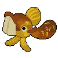

Kraken: A Tale of Revenge is a turn-based RPG with fishing mechanics for combat in a steampunk water world.
Instead of scrolling through menus to select attacks, players fish up their action in a fishing minigame.
Richard Pequod was a fisherman taking care of his daughter in a sleepy seaside town. One day out of nowhere the titular Kraken attacked, destroying all Richard held dear.
Years later Richard is knocked out of his depression daze by rumors that the Kraken has resurfaced, spurring him to embark on his tale of revenge.
Pre-Production
The initial concept of Kraken came from a prompt to make a game with 20 distinct objects.
I started with a WarioWare style collection of minigames, each parodying a classic game by adding fishing mechanics.
My imagination quickly outgrew the scope of the project, so I homed in on the game scenario that had the most potential for fun and addicting gameplay while acting as a vehicle for seamless storytelling.

The Twist
After creating the initial concept, I made a unique twist for Kraken. The goal here is to make a game that stands out and rises above its inspirations.
I combined the story and exploration of a turn-based RPG with the gameplay from fishing games.
Both genres have moments that can break pace, so I wanted to use the more exciting mechanics from each for a more engaging experience
Reference
After deciding on the genres, I sought out two reference games to serve as the main design inspirations. For the RPG mechanics I picked Final Fantasy 6.
The game’s aesthetics are close to what I want for Kraken, along with the story of revenge. On the fishing side I chose the indie darling Ridiculous Fishing.
The way the hook descends to catch fish requires more active player participation than other games in the genre.
Combat Mechanics
The goal of this system is to make combat more engaging than other turn-based games while still maintaining the spirit of the genre.
Instead of being able to pick a specific action, players fish it out of an “Action Pool” while avoiding others they don’t want.
The actions that spawn are randomized so it isn’t just a rehash of older turn-based combat systems.
Player Incentives
This system requires proper risks and rewards to work.
Stronger actions are deeper down the Action Pool. This encourages players to either choose the action already on screen or double down to find something better.
Another risk-reward system is tied to the actions themselves. Each set of actions has one with negative feedback such as making the player heal the enemy.
Kraken also has an element-based magic system, rewarding players for taking advantage of an enemy’s weakness with more damage.
All of this combined makes choosing an action more exciting.
Visual Design
For the color palette of Kraken I chose deep blues and greens to fit with the dark nautical theme.
Low saturated browns and yellows were used as well to compliment the steampunk setting. While this is the primary palette for the game each area will have its own range of colors.
For instance, the first dungeon players get to is the Submerged Construction site so the colors include lots of greys and browns for the construction materials and the rust on them.
Sprites
I created the shark sprite for this prototype.
It’s black to look fearsome yet low in detail.
It was also useful for prototyping the elemental magic system with simple recolors.
This was eventually replaced by more finalized enemy art.
Music and Sound
Combat music should be fast-paced and upbeat, so I composed a minute long loop for this prototype.
I used a 16-bit synthesizer to match the same limitations that other turn-based games did during the height of the genre.
I voiced all the enemy cries, adjusting them through customized effects for versatility.
Role
Game Designer
Duration
6 months
Tools Used
Unity, C#, Aesprite, Audacity, KORG Gadget
Contributions
Concept Creation, System Design, Programming, Narrative Writing, Technical Design